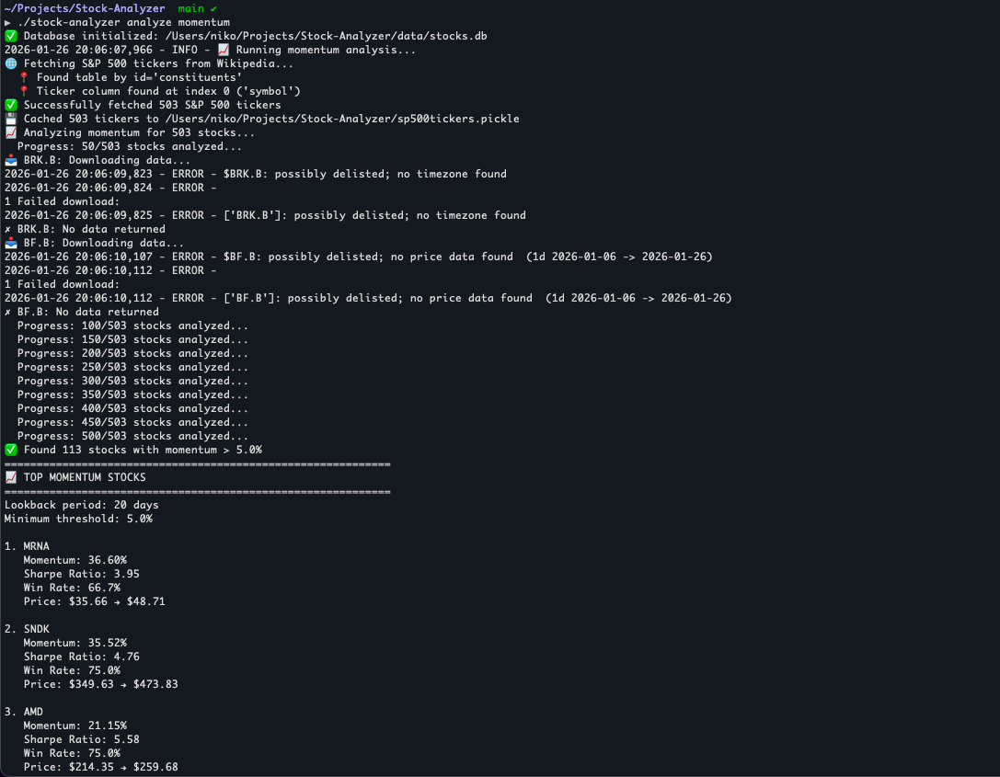
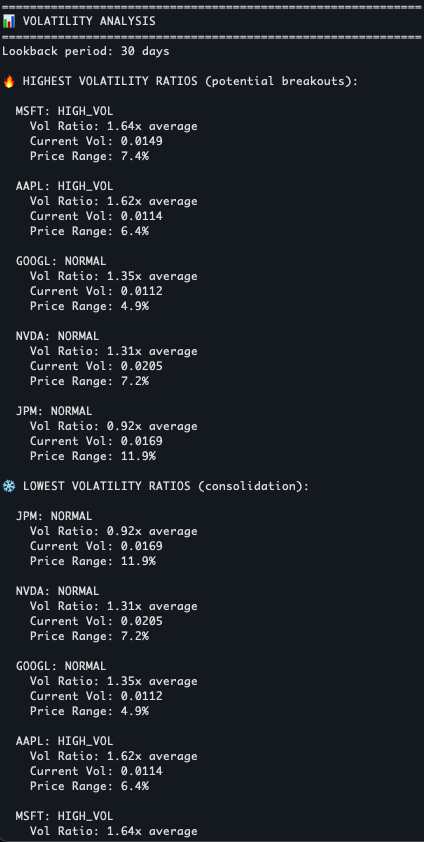
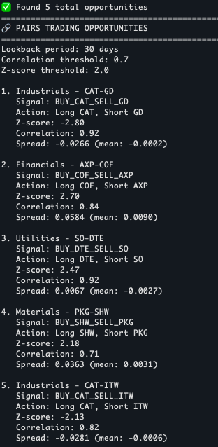
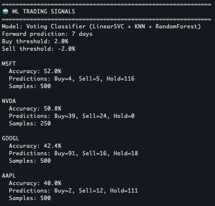

Project Overview
A comprehensive stock market analysis and trading system that provides momentum analysis, volatility detection, sector rotation insights, and machine learning-based trading signals. Built on a config-driven, multi-threaded architecture with real production logging — designed to demonstrate not just financial modeling and ML, but also the engineering practices that make a data pipeline reliable and maintainable.
Technologies Used
Python 3.10+
Pandas
NumPy
scikit-learn
yfinance
SQLite
concurrent.futures
BeautifulSoup
matplotlib
seaborn
mplfinance
Rotating Logging
Key Features
- Momentum Analysis: Identify stocks with strong price momentum and risk-adjusted returns (Sharpe ratio, win rate)
- Volatility Detection: Find stocks with unusual volatility patterns (breakouts/consolidation)
- Pairs Trading: Sector-specific pairs trading opportunities with correlation and z-score analysis
- Sector Rotation: Performance and rotation signals across all 11 S&P 500 sectors
- ML Signals: Buy/sell/hold signals from a voting classifier ensemble (LinearSVC + KNN + RandomForest)
- Parallel Fetching: Multi-threaded yfinance downloads via
ThreadPoolExecutorwith per-worker error isolation and a thread-safe SQLite writer - Production Logging: Centralized logger writing to both console and a rotating log file (5 MB, 3 backups)
- Config-Driven: Tickers, thresholds, and API settings live in a gitignored
config.jsonwith dotted-path lookup and safe defaults - CLI & Python API: Use it as a command-line tool or import the analyzers directly in your own scripts
How It Works
- Data Collection: Pulls S&P 500 tickers from Wikipedia (with a pickle fallback cache) and fetches OHLCV data from Yahoo Finance via parallel
yfinanceworkers - Data Storage: Persists data in a thread-safe SQLite database with serialized writes via a
threading.Lock - Analysis Pipeline: Runs momentum, volatility, pairs, sector-rotation, and ML analyses, all tunable from a single
config.json - ML Predictions: Generates buy/sell/hold signals using a voting classifier ensemble (LinearSVC + KNN + RandomForest)
- Reporting & Logging: Outputs ranked insights to the console and a rotating log file for later review
Installation & Usage
# Clone the repository
$ git clone https://github.com/Marlontino/Stock-Analyzer.git
$ cd Stock-Analyzer
# Create virtual environment (Python 3.10+ required)
$ python -m venv .venv
$ .venv\Scripts\activate # Windows
$ source .venv/bin/activate # macOS / Linux
# Install dependencies
$ pip install -r requirements.txt
# Run a full weekly update (refresh data + every analysis)
$ ./stock-analyzer weekly
$ git clone https://github.com/Marlontino/Stock-Analyzer.git
$ cd Stock-Analyzer
# Create virtual environment (Python 3.10+ required)
$ python -m venv .venv
$ .venv\Scripts\activate # Windows
$ source .venv/bin/activate # macOS / Linux
# Install dependencies
$ pip install -r requirements.txt
# Run a full weekly update (refresh data + every analysis)
$ ./stock-analyzer weekly
CLI Commands
# Check database status
$ ./stock-analyzer status
# Update all S&P 500 stock data (parallel fetch)
$ ./stock-analyzer update
$ ./stock-analyzer update --force
$ ./stock-analyzer update --tickers AAPL MSFT GOOGL NVDA META
# Fetch specific stocks one-off
$ ./stock-analyzer fetch AAPL MSFT GOOGL
# Run all analyses, or scope to one
$ ./stock-analyzer analyze
$ ./stock-analyzer analyze momentum --tickers AAPL MSFT GOOGL
$ ./stock-analyzer analyze volatility
$ ./stock-analyzer analyze pairs
$ ./stock-analyzer analyze sectors
$ ./stock-analyzer analyze ml
# Full weekly update (refresh + every analysis)
$ ./stock-analyzer weekly
$ ./stock-analyzer status
# Update all S&P 500 stock data (parallel fetch)
$ ./stock-analyzer update
$ ./stock-analyzer update --force
$ ./stock-analyzer update --tickers AAPL MSFT GOOGL NVDA META
# Fetch specific stocks one-off
$ ./stock-analyzer fetch AAPL MSFT GOOGL
# Run all analyses, or scope to one
$ ./stock-analyzer analyze
$ ./stock-analyzer analyze momentum --tickers AAPL MSFT GOOGL
$ ./stock-analyzer analyze volatility
$ ./stock-analyzer analyze pairs
$ ./stock-analyzer analyze sectors
$ ./stock-analyzer analyze ml
# Full weekly update (refresh + every analysis)
$ ./stock-analyzer weekly
Python API
The analyzers can also be imported directly into your own scripts or notebooks:
from stock_analyzer.data.database import DatabaseManager
from stock_analyzer.data.fetcher import StockDataFetcher
from stock_analyzer.analysis.momentum import MomentumAnalyzer
# Fetch data in parallel
with DatabaseManager() as db:
with StockDataFetcher(db) as fetcher:
fetcher.fetch_multiple(['AAPL', 'MSFT', 'GOOGL'])
# Run analysis
with MomentumAnalyzer() as analyzer:
results = analyzer.find_momentum_stocks(
tickers=['AAPL', 'MSFT', 'GOOGL'],
lookback_days=20,
)
from stock_analyzer.data.fetcher import StockDataFetcher
from stock_analyzer.analysis.momentum import MomentumAnalyzer
# Fetch data in parallel
with DatabaseManager() as db:
with StockDataFetcher(db) as fetcher:
fetcher.fetch_multiple(['AAPL', 'MSFT', 'GOOGL'])
# Run analysis
with MomentumAnalyzer() as analyzer:
results = analyzer.find_momentum_stocks(
tickers=['AAPL', 'MSFT', 'GOOGL'],
lookback_days=20,
)
Sample Output




Momentum Analysis
📈 TOP MOMENTUM STOCKS
1. AAPL — Momentum: 11.66% | Sharpe: 10.01 | Win Rate: 71.4%
2. NVDA — Momentum: 8.49% | Sharpe: 2.50 | Win Rate: 57.1%
1. AAPL — Momentum: 11.66% | Sharpe: 10.01 | Win Rate: 71.4%
2. NVDA — Momentum: 8.49% | Sharpe: 2.50 | Win Rate: 57.1%
Volatility Analysis
📊 VOLATILITY ANALYSIS
NVDA: NORMAL (ratio 0.95x, current 0.0256)
META: LOW_VOL (ratio 0.64x, current 0.0116)
NVDA: NORMAL (ratio 0.95x, current 0.0256)
META: LOW_VOL (ratio 0.64x, current 0.0116)
Pairs Trading
🔗 PAIRS TRADING OPPORTUNITIES
1. Industrials - GNRC-IEX
Signal: BUY_IEX_SELL_GNRC
Z-score: 3.94 | Correlation: 0.80
1. Industrials - GNRC-IEX
Signal: BUY_IEX_SELL_GNRC
Z-score: 3.94 | Correlation: 0.80
Sector Rotation
🔄 SECTOR ROTATION ANALYSIS
🟡 Real Estate (XLRE) HOLD — Sharpe 0.02 | Market Correlation 0.63
🟡 Energy (XLE) HOLD — Sharpe 0.07 | Market Correlation -0.52
🟡 Real Estate (XLRE) HOLD — Sharpe 0.02 | Market Correlation 0.63
🟡 Energy (XLE) HOLD — Sharpe 0.07 | Market Correlation -0.52
Logging
[2026-05-24 19:25:32] [INFO] Pairs trading signal detected for AAPL/MSFT
[2026-05-24 19:25:32] [WARNING] BRK.B: No data returned
[2026-05-24 19:25:32] [ERROR] SQL Error: no such column: foo
[2026-05-24 19:25:32] [WARNING] BRK.B: No data returned
[2026-05-24 19:25:32] [ERROR] SQL Error: no such column: foo
Project Structure
- src/stock_analyzer/ — Installable package layout, with
main.pyas the CLI entry point - data/ — SQLite database, parallel yfinance fetcher, and Wikipedia S&P 500 scraper
- analysis/ — Momentum, volatility, pairs trading, sector rotation, ML signals
- config/ — Default settings (overridden by
config.json) and S&P 500 sector definitions - services/ — Scheduler and update orchestration
- utils/ — Dotted-path
config.jsonloader and the central rotating logger - tests/ — Test suite
- notebooks/ — Jupyter notebooks for exploration
Skills Demonstrated
- Financial data analysis and quantitative modeling
- Ensemble machine learning for trading signal generation
- Concurrency:
ThreadPoolExecutor, locking, and thread-safe SQLite access - Production engineering practices: config-driven design, rotating logs, graceful error isolation
- API integration with financial data sources
- CLI and Python-API design (dual-mode entry points)
- Statistical analysis (correlation, z-scores, Sharpe ratio)
Project Highlights
- Real-World Application: Analyzes actual S&P 500 stock data, end-to-end
- Parallel by Default: Full S&P 500 refresh in ~3-5 minutes via multi-threaded fetching
- Resilient: One ticker's network failure can't crash the batch — errors are caught, logged, and traceable
- Config-Driven: Every threshold and tunable lives in
config.jsonwith safe defaults baked in - Extensible Design: Modular package layout (
src/stock_analyzer/) ready for new analyses or data sources